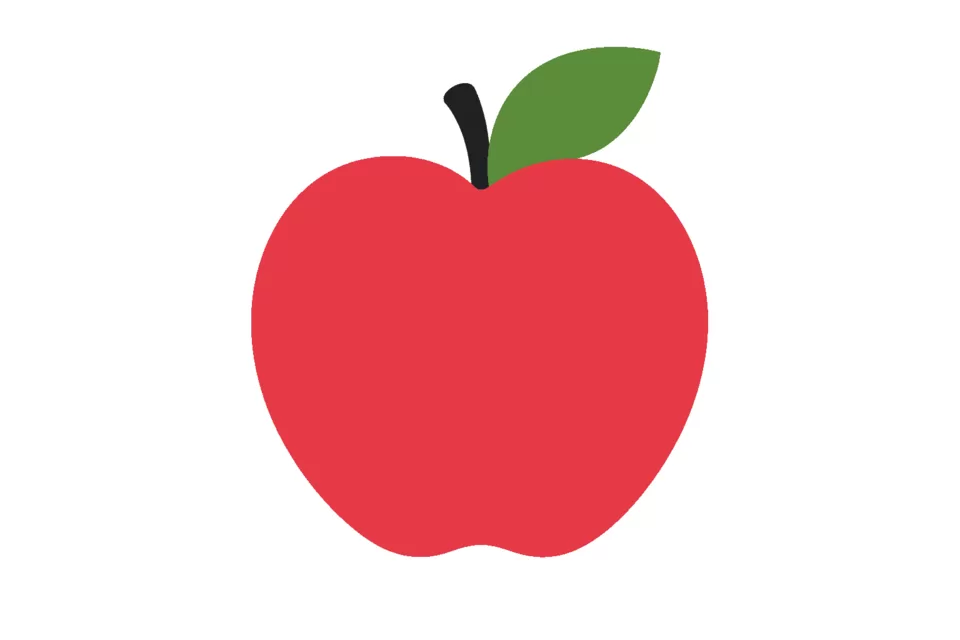
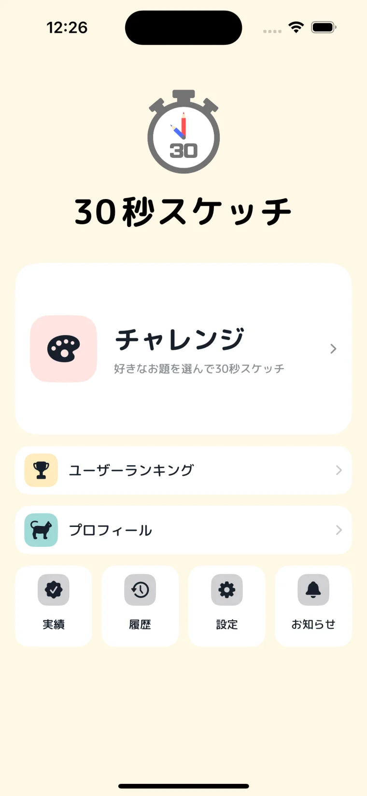
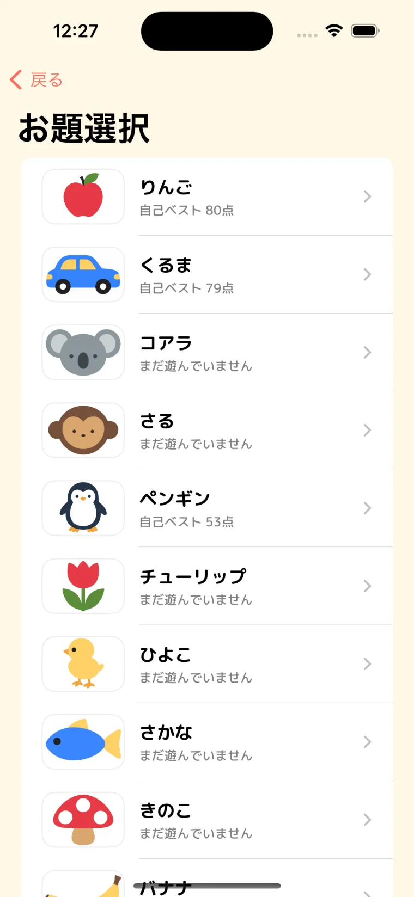
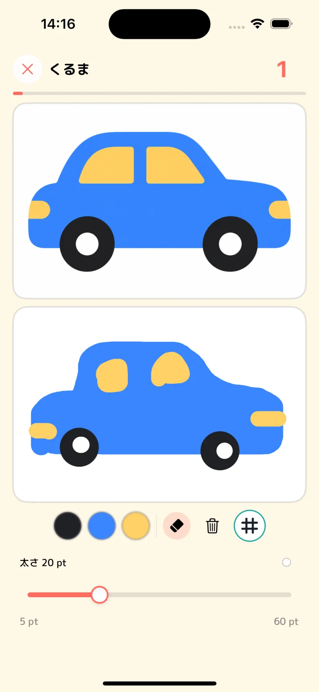
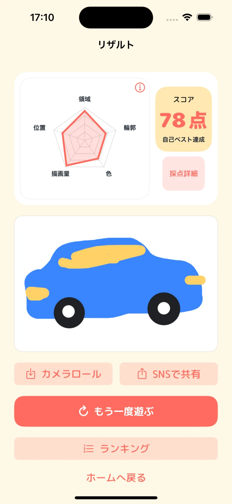
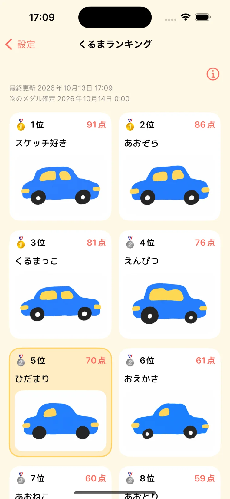
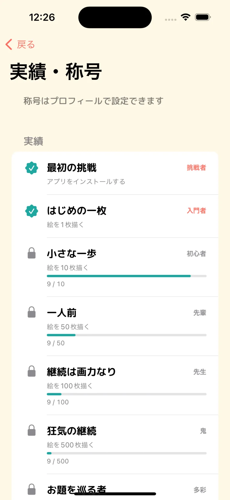

結果を、5つの指標で。
領域・輪郭・色・描画量・位置をレーダーチャートで表示。お手本との違いを画像比較で採点します。
30秒で、
どこまでそっくり？
お手本を見ながら、30秒でスケッチ。
形・色・描画量から算出されるスコアで
ライバルに挑戦するお絵描きゲーム。

アプリに収録するお題イラスト
アプリ内の「遊び方」と同じ流れで紹介します。
お題の形・色・描かれている量を確認します。
お手本を見ながら30秒で絵を描きます。
グリッドボタンを押している間、お手本とキャンバスに同じガイドが表示されます。
時間終了後、形状・色・描画量から100点満点で採点。ベストスコアはお題ランキングに登録されます。
結果画面から写真へ保存・共有できます。プレイ履歴から描いた作品も見返せます。
横にスワイプして、実際のゲーム画面をご覧いただけます。






領域・輪郭・色・描画量・位置をレーダーチャートで表示。お手本との違いを画像比較で採点します。
お題ごとのベストスコア順位と作品を表示。現在保持しているメダルのポイント合計で、上位50人のユーザーランキングも確認できます。
プレイ回数、挑戦したお題の種類、保持メダルなどの条件で実績を解除。獲得した称号はプロフィールに設定できます。
結果画面から作品を写真へ保存し、スコアとチャートを添えて共有できます。プレイ履歴から過去の作品も見返せます。
お題ごとのベストスコア順位に応じて付与されます。金・銀・銅の3種類があり、毎日0:00（日本時間）に順位を再集計して更新します。
お題ごとにベストスコアを競うランキングです。ランキングでは上位のスコアと作品を確認できます。
現在保持しているメダルのポイント合計で競うランキングです。上位50人を表示します。
今後のアップデートで、新しいお題を追加する予定です。
お手本と描いた絵を画像比較し、形状・色・描画量をもとに100点満点で算出します。詳細な算出方法は非公開です。
App Storeでの公開に向けて準備しています。
アプリについてのお問い合わせ
yotalab.tech@gmail.com ↗